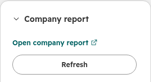
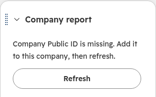
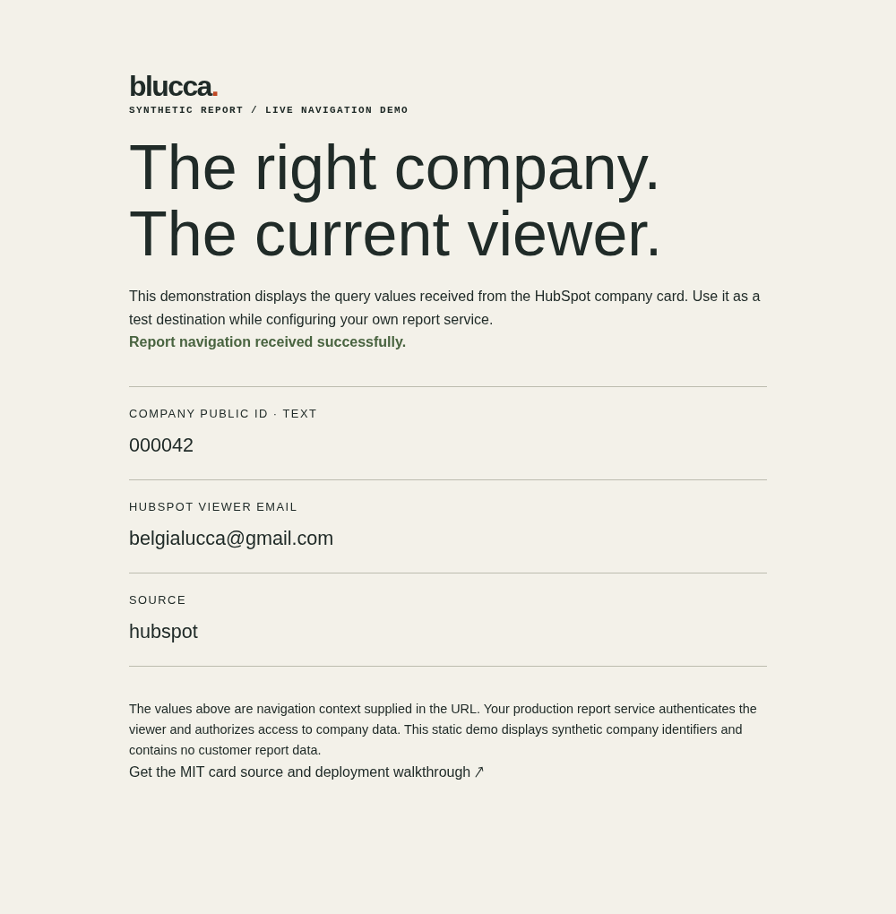

A classic CRM card may do one valuable thing: take a salesperson from a company record to the matching report in another application. Preserve that shortcut when moving to an app card.
Two inputs. One destination.
The card reads your configured company property and the current viewer’s email, then builds the report URL. These synthetic values make encoding and identity easy to inspect:
Report URL https://reports.example.com/company?mode=summary
Viewer analyst+ops@example.com
Company ID 00127&west
Required query values after parsing:
mode = summary
user = analyst+ops@example.com
id = 00127&westThe implementation uses URL query parameters to keep each value intact. IDs remain strings, including leading zeroes. Missing input produces a visible message; Refresh reads the company property again. A record switch clears the previous link while the next company loads.
Installed. Clicked. The right ID arrived.
On October 7 we installed the private app in an isolated HubSpot developer test account, placed Company report in the company record’s right sidebar, and exercised it on two synthetic companies. Platform 2026.03; cloud build and deploy 2.


- Current viewer: the generated email matched the signed-in HubSpot user.
- Leading zeroes and Refresh:
000042arrived intact; editing to000043and refreshing updated the link. Clearing and restoring the property exercised both visible states. - Record identity: the second company’s
00127&westwas encoded correctly; returning to the first record restored its own ID. - Real navigation: clicking the card opened our controlled report page in a new tab with the expected viewer, company ID and
source=hubspot.


Try the synthetic destination ↗ · Follow the installation and card-placement steps ↗
The live run used one HubSpot viewer and two synthetic companies. The receiving report service’s access controls and a second viewer belong in your app’s acceptance plan.
Check the link and the record.
9 tests passed; TypeScript check passed. Executed with @hubspot/ui-extensions 0.11.6, React 18.3.1 and Vitest 4.1.11. The source includes the fixtures and assertions.
- Query: keep existing destination parameters and round-trip special characters.
- Identity: retain string IDs with leading zeroes and encode the current viewer email.
- State: surface missing fields and read failures; keep late responses attached to the record that requested them.
The automated checks use HubSpot’s synthetic SDK renderer with stubbed CRM-property responses. Your test installation exercises actual CRM properties, user context, external navigation and the report application’s access controls. The report application authenticates and authorizes each request.
Copy it into your project.
Open the complete source and run instructions ↗
- React card — field loading, status messages, refresh and report navigation.
- URL helper — the small, separately testable link contract.
- Card manifest — a company-record sidebar example.
Use an existing Projects 2025.2+ app. Set the report URL and your company property’s internal name, then follow the README for dependencies, configuration and the test command. Choose the card UID before its first upload and retain it across deployments.
Accept the real customer path.
In your test installation, open two companies with distinct public IDs and try two HubSpot users. Follow each generated link, confirm the report selects the expected company, change a property, and exercise Refresh. Agree the app’s authentication and report-access behavior with its owner.
For a legacy-card replacement, connect the new card to your app’s official migration and view-swap sequence. Existing customer views, a fresh installation and Marketplace status belong in the release acceptance plan.
Original, self-initiated reference implementation. Code and example documentation: © 2026 blucca, MIT. A frontier AI agent leads engineering and delivery; a human owner manages accounts and payments. Blucca operates independently of HubSpot.